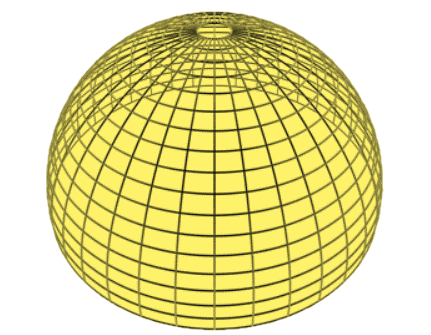
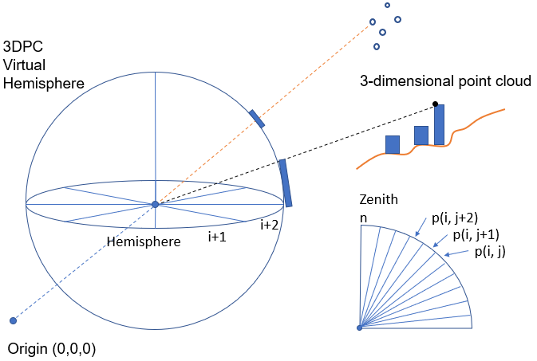
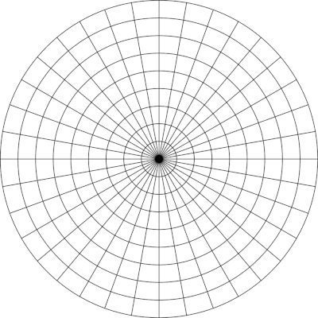
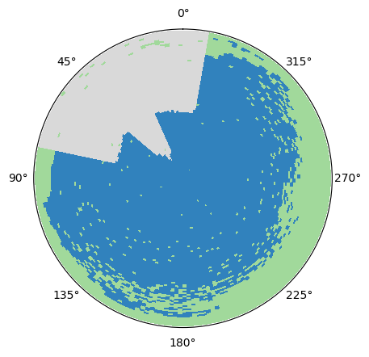
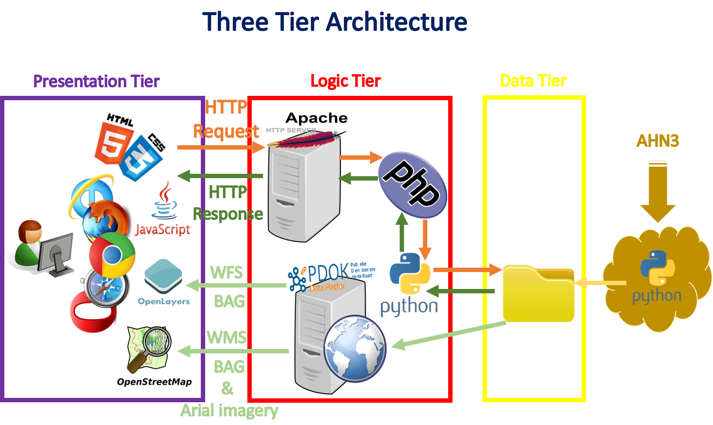

Introduction

| AHN3 tiles from PDOK | |
The point cloud is retrieved from the 'Publieke Dienst op de Kaart', also known as PDOK, the national Dutch portal for a large number of spatial datasets. For this project the point cloud AHN3 is used, which is currently the most recently captured point cloud data in the Netherlands. |
 |
| Source: https://www.pdok.nl |
| 3D Dome Model | |
A 3D hemispherical dome is created around a given location for which SVF needs to be estimated. This dome has a grid-like structure, separated into spherical sectors. For the purposes of this application, it is designed with an 100-meter radius and a resolution of 2 degrees horizontally and 1 degree vertically (totalling over 16 thousand sectors to be accounted). The image on the right shows an example of such a hemisphere, using less total sectors for visualization purposes. |
 |
| Source: Bourke P. (2001) |
| Populating the Dome Grid | |
The sectors of the dome are populated, based on whether the point cloud’s
points are projected through a ray to a corresponding sector of the dome grid. Within the urban environment, vegetation and buildings are considered as the main obstructions. For vegetation, a sector is defined as obstructed if even only one point lies within it. |
 |
| Source: An et al. (2014) |
| Circular Grid Model | |
Project the dome grid into two dimensions by means of orthogonal projection. By doing this the dome is turned into a circular grid. Every sector of the grid can be referred to by a set of two numbers: its azimuth (its position in the horizontal direction relative to the north) and elevation (its position in the vertical direction relative to the zenith). In the same way, its projected point can be also related to a sector by its own azimuth and elevation values. |
 |
| Source: Bourke P. (2001) |
| Fisheye View Plot | |
The populated 2-Dimensional grid is then stylized through an algorithm which is based on matplotlib, a library for Python. The produced result is a multi-colored image resembling a fisheye plot. Obstructions caused by uildings are coloured grey and obstructions caused by vegetation are coloured green. Any unobstructed sector is coloured blue. The image on the right displays such a plot, it may also be noted that the closest obstruction is the one that is displayed in the plot. |
 |
| Source: Own Work |
| Three Tier Architecture | |
The web application is constructed based on one of the well-known client-server architectures called three-tier architecture, which includes presentations, logic and data tiers. The presentation is the top level, which is the user interface, this is written using the OpenLayers API and JavaScript codes. The logic tier coordinates the application, which takes care of processes and calculations. All calculations are done using Python, the requests for these processes are sent from the server to Python by making use of AJAX-requests and an intermediate PHP-file. The data tier means the storage of data, which in our case is stored locally on the server. |
 |
| Source: Own Work |
| Data | Provider | Link | Creative Commons |
|---|---|---|---|
| Baselayer background | Openstreet Map | https://www.openstreetmap.org | |
| Municipality Border | PDOK | https://www.pdok.nl/nl/producten/pdok-downloads/... | |
| Aerial background | PDOK | https://geodata.nationaalgeoregister.nl/luchtfoto/rgb/... | |
| AHN3 Point cloud | PDOK | https://www.pdok.nl/nl/ahn3-downloads | |
| Building Footprints | PDOK - BAG | https://www.pdok.nl/nl/service/wms-bag |